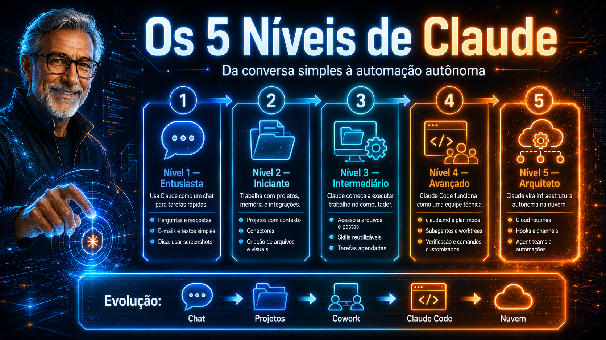

Da conversa simples à automação autônoma. Cinco níveis, um caminho claro, cheat codes entre cada um — e uma prova final pra você se posicionar com honestidade.
⏱ ~6h de conteúdo · 13 módulos · 80+ tópicos · prova final

Todo mundo trata Claude como busca. 90% trava no Nível 1 sem perceber. Quem chega ao Nível 5 acorda com PRs já revisados, briefings prontos e relatórios entregues — máquina desligada.
O salto entre níveis tem um "cheat code" em cada um. Esse curso te dá os 5.
Marque apenas o que você JÁ FAZ hoje (não o que pretende fazer).
5 níveis + 1 prova final. Cada trilha tem cor própria — siga em ordem ou pule pra onde você está.
Você usa Claude como uma busca inteligente. Aprenda a sair daí.
Projetos, memória, conectores e arquivos reais. 5h economizadas por semana.
Co-work, skills, tarefas agendadas. Claude vira coworker na sua máquina.
Claude Code, claude.md, worktrees, subagentes. Projetos R$ 25–75k.
Routines, hooks, agent SDK. Claude trabalha enquanto você dorme.
Avaliação dos 5 níveis. Honestidade sem trapaça — descubra onde você realmente está.
Pergunta-resposta
Contexto contínuo
Sua máquina
Time paralelo
Infra 24/7